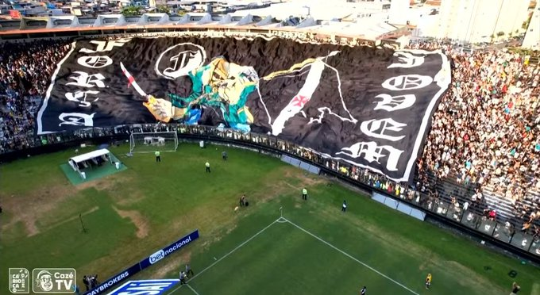

Força Jovem Vasco
História
A Força Jovem do Vasco (FJV) foi fundada em 1968 por um grupo de jovens vascaínos apaixonados pelo clube. Inspirada em movimentos torcedores europeus e sul-americanos, a FJV rapidamente se tornou uma das maiores e mais tradicionais torcidas organizadas do Brasil.
Mascote e Cores
O mascote da Força Jovem é o lendário Eddie the Head, personagem icônico da banda de heavy metal Iron Maiden. A versão adaptada pela torcida veste um capuz e exibe traços sombrios, representando bravura, resistência e o espírito de luta. As cores tradicionais da torcida são o preto, o branco e o vermelho da cruz de malta, símbolos sempre presentes nas bandeiras e materiais da FJV.
Famílias e Núcleos
A torcida é dividida em "famílias", que representam bairros, cidades ou estados. Cada família tem sua bandeira, faixa e núcleo de atuação, mantendo a FJV presente em todo o Brasil e até fora do país.
Brigas e Punições
Ao longo dos anos, a Força Jovem também esteve envolvida em confrontos com outras torcidas organizadas. Em alguns casos, essas situações resultaram em punições severas, como proibição de uso de faixas, camisas, e até presença nos estádios. A torcida passou por períodos de afastamento e reorganização para recuperar sua imagem.
Curiosidades
A FJV já organizou grandes caravanas nacionais e internacionais, sendo presença garantida em finais importantes. Muitos torcedores da FJV tatuam a caveira, frases icônicas e a cruz de malta como símbolo de amor eterno ao Vasco.